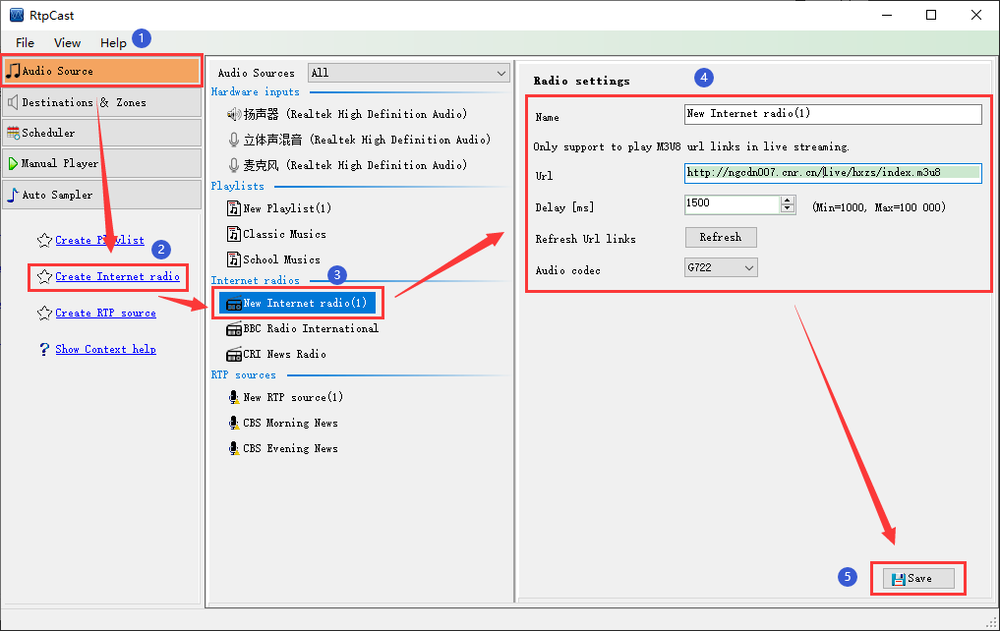

|  |
|
Introduction |
|
Internet radio allows you to use the advantages of the Internet to integrate some HLS resources (m3u8 format) on the network into the system. For example: political diplomacy news, economy channel, tourism and entertainment program radio and so on, meet the needs of a variety of application scenarios. |
|
Operation |
| (1) Click the [Create Internet radio] in the left navigation panel, or right-click in the blank area of "Internet radios" in the middle, and then click the [Create Internet radio] menu item. By default, the sub item name "New Internet radio(x)" is generated(x = 1,2,3...). At this time, the user can right-click the pop-up menu on the sub item [Rename] or [Delete] the sub item. |
| (2) In the "Radio settings" panel on the right, you can edit the name, URL, delay and audio codec, and click the [Refresh] to check the validity of the url. |
| (3) Click [Save] to save the configuration parameters. |